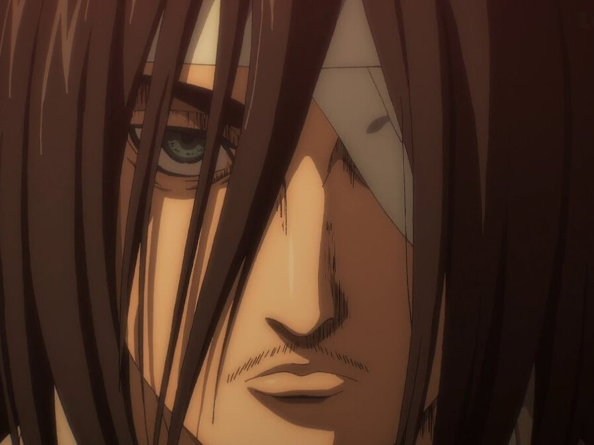

Galería de Personajes
Registros visuales con los nombres reales de los personajes:

Eren Jaeger

Capitán Levi
Titán de Ataque
"Si no luchas, no puedes ganar. ¡Pelea! (Tatakae)"
Hace más de un siglo, la humanidad fue confinada dentro de tres inmensas murallas para escapar de los Titanes devoradores de hombres. Tras cien años de una falsa paz, la caída del Muro María despierta la furia de Eren Jaeger, quien junto al implacable Capitán Levi Ackerman y la Legión de Reconocimiento, jura destruir a los enemigos que les arrebataron su libertad.
Conoce las tres facetas fundamentales que convierten a Eren en la mayor esperanza (y peligro) de la humanidad:
Posee el Titán Fundador. Su inquebrantable determinación le permite despertar la "Coordenada", la habilidad mística para controlar ejércitos de titanes con un solo grito.
Su forma de 15 metros orientada al combate puro. Cuenta con una fuerza física descomunal, regeneración instantánea y la capacidad de ver los recuerdos de futuros portadores.
Tras consumir el suero de la familia Reiss y dominar al Titán Martillo de Guerra, Eren puede crear pilares, armas y armaduras de cristalización pura para el combate a distancia.
Registros visuales con los nombres reales de los personajes:

Eren Jaeger
Capitán Levi
Titán de Ataque
Bajo las estrictas órdenes del Capitán Levi Ackerman, nuestra misión absoluta es custodiar a Eren Jaeger y guiar su poder para salvar a la humanidad.
Cuartel General: Antiguo Castillo de la Legión, Muralla Rose
Horarios: Disponibilidad 24/7 en tiempos de expedición
Líder a cargo: Capitán Levi Ackerman